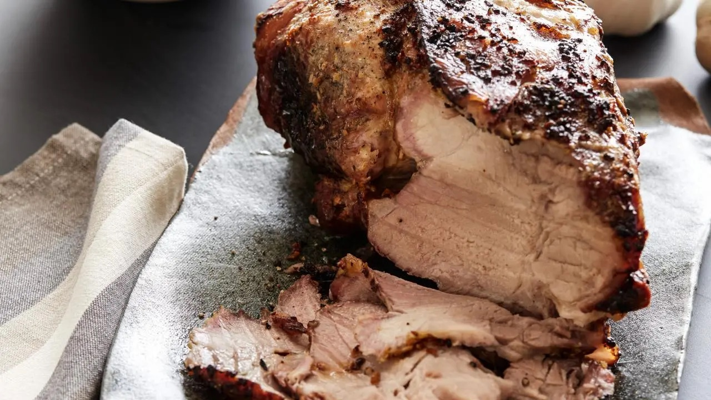

Roasted Pork Shoulder

Roasted pork shoulder is a flavorful cut of meat, slow-cooked to tender perfection with a crispy, caramelized exterior and juicy, savory interior.
Ingredients
- 3 tablespoons olive oil
- 3 tablespoons chopped garlic
- Salt and freshly ground black pepper
- 1 (4 pound) pork shoulder
Steps
- Preheat the oven to 425 degrees F.
- In a small bowl, mix together the olive oil, garlic, salt and pepper. Using a pastry brush, spread the mixture all over the pork shoulder.
- Set the meat on a rack set into a roasting pan. Roast for 20 minutes, and then reduce the heat to 325 degrees F. Continue to cook until an instant-read thermometer inserted into the shoulder reads 185 degrees F, about 4 hours. Remove the pork from the oven and let stand until cool enough to handle, about 30 minutes.
Home